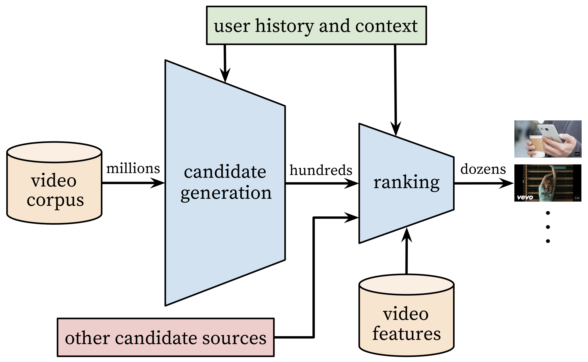

在现在的推荐系统中, 使用多中方法(通道)来进行召回, 然后将召回物品集合再通过排序模型, 作为最终的推送物品. 下面就来对多路召回+排序进行介绍与实践.
前言
前面的一些文章中, 介绍了好一些个召回方法, 包括协同过滤(物品/用户), 矩阵分解,基于用户画像, DSSM, YouTubeNet, item2vec等.
同时也实践了多种排序模型, 包括LR, FM, DNN(Embedding+MLP), DeepFM等.
那么这么多的召回方法, 以及排序模型, 是怎么在推荐系统中进行使用的呢? 通常是采用多种召回方法, 分别召回出每个用户可能偏好的物品, 然后将它们的结果整合到一起, 再送入到一个排序模型, 将预测得到的用户最可能喜欢的物品进行推送.
为什么要这样设置, 这样设置有神马好处呢, 下面来分析一下.
原理

上图是YouTubeNet论文中的图, 其实把图中的视频源看成广义上的物品, 其整体架构差不多就是一个典型的多路召回+排序.
之所以使用多路召回+排序的架构, 我认为是推荐系统的工程实现以及推送效果的一种平衡.
首先是从工程实现上, 大多数的召回模型或者算法, 用到的特征(信息)是很少的, 例如协同过滤类的算法, 就用到了用户和物品的ID特征. 而与之对应的排序模型, 则几乎是能有多少特征, 就用多少特征. 众所周知, 有效的特征越多, 模型效果越好, 那么问题来了, 既然排序模型效果比召回模型好, 为啥不直接全部用排序模型呢?
假如只使用排序模型, 那么当给一个用户进行推荐的时候, 需要联合这个用户对所有的物品打分, 然后排序, 然后推送头部的物品. 想像一下当物品数量超过10万, 100万, 甚至上亿的时候, 这消耗的时间就不是毫秒, 秒级的了, 而是分钟, 小时级. 等你排序完, 用户早走了 QAQ 而且这还只是一个用户, 要知道同时会有多个用户进行请求, 用这种方法(一个排序模型)是明显不行的.
那么只使用召回模型呢, 也是有问题的. 召回模型一般离线训练好以后, 可以进行快速匹配, 比如给出一个用户对应的Embedding, 可以在毫秒级的时间里, 返回与之相似的一些物品, 不过推荐效果嘛可能相对会差一点~
一个召回模型不行, 那么就可以考虑上多个, 因为它们之间是可以并行的. 每个召回方法, 都有自己的一些特点, 从不同的角度, 去猜测用户的偏好, 在将它们的结果融合以后, 理论上的确是可以获得更好的效果的.
但现在仍然存在一个问题, 多个子模型可以融合成一个更强的融合模型, 但是来自不同召回通道的不同物品集, 它们最终会融合成一个更大的物品集. 假设现在有10个召回通道, 想为用户推送100个物品, 那么一种方法是每个通道来大概10个, 对于每个召回通道来说, 一次召回10个物品, 且不说查准率(Precision)如何, 查全率(Recall)一定很感人, 运气不好可能为零. 就是说, 用户最感兴趣的一些物品, 并不完全集中在召回模型选出的头部物品中, 需要扩大召回物品的数量, 才能保证查全率.
另一种方法, 就是每个通道多来一些物品, 假设50个, 加起来约500个(考虑去重), 这500个物品当中, 应该就包含了用户比较感兴趣的物品, 但可能也存在一些不怎么感兴趣的物品, 怎么进一步挑出100个呢?
排序模型这时候站了出来: 没错, 正是在下 ♪(^∇^*)
举个栗子, 班上有一群同学, 假设有$N$个, 现在经过了一场考试, 考试成绩下来了, 想统计出成绩排名前3(托普思瑞)的同学, 可以怎么做呢? 一种方法是进行全排序, 再取托普思瑞, 这样的时间复杂度, 大概是$O(N\log N)$. 还有一种方法, 就是假设已经知道了托普思瑞的同学成绩必然在90分以上, 并且90分以上的同学并不多, 那么先将90分的同学找出来, 再在这部分同学当中进行排序, 整体时间复杂度就趋于了$O(N)$, 当$N$较大时, 能剩下不少时间.
通过上面的栗子, 可以感觉到, 先用一些快速的召回方法, 来去掉用户大概率不感兴趣的物品, 保留少部分可能感兴趣的, 然后再使用排序模型来进行预测, 优中选优. 这样即能够节省计算时间, 减轻工程鸭梨, 又能够保证一定的推荐效果
代码
现在, 就用实际的数据与算法来实践一下.
这里使用的数据, 仍然是经典的movielens的MovieLens 1M Dataset.
其中包含约100万的用户对电影的打分记录, 由约6000用户对约4000电影打分而得到.
包含3份数据, 一份是打分文件”rating.dat”, 格式为用户ID::电影ID::打分::时间戳, 并且:
- 用户ID在1到6040之间.
- 电影ID在1到3952之间.
- 打分有5个等级.
- 每个用户至少有20条打分记录.
一份是用户文件”user.dat”, 格式为用户ID::性别::年龄::职业::邮编.
还有一份电影文件”movies.dat”, 格式为电影ID::电影名称::风格流派.
为了模拟点击预估的情形, 统计了每个用户的平均打分, 将高于平均打分的看做正样本(点击, 1), 低于平均分的看做负样本(曝光未点击, 0).
按时间, 即将时间靠后的样本划分为测试集. 同样的, 也要在预处理时对活跃用户进行下采样OvO
对于多路召回部分, 将会使用矩阵分解, 基于用户画像, DSSM, DeepWalk; 对于排序模型, 将会使用DeepFM.
关于评估指标, 将会采用查准率(Precision), 查全率(Recall), F1值.
这里再多说一下关于评估指标的事情, 对于推荐系统来说, 真正能衡量其好坏的一些指标, 应该是一些偏向业务的指标, 如点击率, 停留时长, 留存率等, 而这些指标通常只有在线上才能进行准确评估.
在线下迭代模型的时候, 通常会采用一些与模型相关的指标, 如AUC(模型能够输出分数), 查准率, 查全率等. 其中一些模型, 如排序模型, 是可以在同一批样本上, 与上一版模型进行比较的, 并且指标越好, 通常上线后也会有较好的效果.
但还有一些算法或者模型, 如协同过滤, 是难以在线下进行较好有效评估的. 比如上一版协同过滤在使用时, 是召回了一堆物品, 再经过排序模型筛选后曝光, 然后用户选择其中一些物品进行点击. 而在迭代算法(如协同过滤)的时候, 在训练集上进行训练, 目的是召回用户可能感兴趣的物品, 但在测试集上评估时, 其实相当于是在猜用户之前(在上一版模型下)点击了哪些物品, 这是有区别的. 所以要进行真正有效的比较与评估, 还是得进行线上AB Test.
不过毕竟不能做线上测试 OvO 而查准率, 查全率和F1值在测试集上也能反映一些整体的效果, 所以仍采用这些指标. 同时, 考虑到在测试集上, 有的用户点击了较多的物品, 有的只点击了很少的物品, 在评估时, 如果统一推送相同数量(如200), 是有一些不合理的. 我认为更好一些的方式, 是根据用户的点击(或曝光)数量, 来决定推送数量, 这里采取的方式为推送数量为用户在测试集点击物品数量的3倍.
在排序时, 根据几种召回方法各自的表现, 联合其结果进行排序并推送.
这里考虑到篇幅问题, 只列出部分关键代码, 或者可以移步到我对每种算法单独介绍的篇章中查看, 每个部分将会给出对应的链接.
矩阵分解
在我的这篇文章中介绍了矩阵分解算法的原理, 并在这篇文章中进行了代码实践. 当时是作为一个回归问题, 即用向量之间的内积, 来拟合用户对电影的评分(1-5), 而这里则是作为一个二分类问题来处理. 同时对模型代码做了一些调整, 将原本的固定的整体均值mean换成了可以学习的bias, 并去掉了每个用户与物品的偏置项, 这是因为后续在使用Faiss对Embedding的内积进行搜索时可以更加方便 OvO
模型及训练代码如下:
1 | # SVD |
1 | tf.random.set_seed(7) |
1 | train: 0.8691, val: 0.7902, test: 0.7643 |
这里数据预处理的方式, 和之前排序模型那里的方式是一样的, 在这种情况下, 看起来简单的矩阵分解模型, 却可以达到还不错的效果. 这一方面说明了内积这种特征交叉形式的强大, 另一方面当然也说明了在这份数据中能起到主要作用的, 就是ID类的特征.
然后提取模型中用户与物品的Embedding, 并使用Faiss进行召回, 在测试集上查看评估指标.
1 | # 统计每个用户已曝光过的物品 |
1 | # 统计测试集上每个用户点击的物品 |
1 | # 获取向量 |
1 | # 为每个用户寻找感兴趣的物品(去除已曝光) |
1 | # 计算查准率, 查全率, F1 |
1 | Precision: 0.1300, Recall: 0.3850, F1: 0.1943 |
用户画像
之前分别介绍了物品画像, 用户画像的相关内容, 并进行了代码实践, 这里的做的方式仍然是一致的.
在物品画像上, 主要使用贝叶斯平滑来处理点击率, 用以衡量各个物品的质量(受欢迎度), 并按照各个物品的类别, 来制作倒排表.
1 | # 贝叶斯平滑, 挑选出记录大于50条的电影的点击率, 用来估计贝塔分布参数 |
1 | 0.48379310645264734 0.20019408317307302 |
1 | # 制作倒排表 |
而对于用户画像, 则根据用户过往点击过的物品, 统计对于物品的类别分布, 估计用户的偏好, 用标签来进行刻画.
1 | # 遍历数据进行统计, 包括各标签整体的曝光/点击, 以及每个用户的曝光点击 |
通过用户画像中, 用户对各个类别物品的偏好程度, 来决定各个类别物品的召回数量, 并再从倒排表中获取对应的头部物品, 从而进行推送.
1 | # 计算查准率, 查全率, F1 |
1 | Precision: 0.1053, Recall: 0.3344, F1: 0.1602 |
用户画像这里, 从测试集上的结果来看, 相比上面的矩阵分解方法(F1值0.1943), 要差了一些. 这显示了隐式召回的优势, 但基于用户画像的显式召回, 有着不少隐式召回所没有的优点, 比如可控性, 可解释性等, 因此也是要尽量做好的.
DSSM
我的这篇文章中, 介绍了DSSM模型的原理, 也进行了实践.
个人感觉DSSM在召回模型中, 是比较像排序模型的, 因为理论上可以把已有的特征, 都加入到模型当中, 包括用户行为序列特征.
在离线训练好了DSSM模型以后, 物品的Embedding一般就固定了, 而用户的Embedding, 要看原本的特征中, 是否包含了一些动态的特征(如点击行为序列), 若包含, 那么可能每次申请召回时, 需要单独过一遍用户侧的网络, 来获取用户Embedding.
下面是DSSM模型的相关代码:
1 | # DSSM |
1 | # 训练模型 |
1 | train: 0.8398, val: 0.7949, test: 0.7692 |
对比前面的矩阵分解模型, 在测试集上DSSM比矩阵分解模型的AUC高了约5个千分点, 这河里吗, 这河里呀 OvO 毕竟DSSM用到了更多的特征, 更加灵活的网络结构.
然后分别使用用户侧与物品侧的网络, 来获取Embedding:
1 | # 用户侧网络模型 |
最后使用Faiss进行搜索召回, 再来看召回物品在测试集上的其它评估指标:
1 | # 计算查准率, 查全率, F1 |
1 | Precision: 0.1278, Recall: 0.3785, F1: 0.1911 |
对比前面矩阵分解的结果(F1值0.1943), 要差了一些. 诶明明AUC都要高一些, 为啥F1值却下降了呢 QAQ 其实一开始也提到了, 这里用AUC, 以及查准率, 查全率, F1值来进行评估, 并不是评估的同一件事情, 前者评估的是整体的排序能力, 后者评估的是召回的物品对用户原本点击的物品”猜”得对不对, 所以两者表现不一致也是可以解释的~
DeepWalk
在我的这篇文章中, 对DeepWalk的原理进行了讲解, 并还进行了代码实践.
而在这里呢, 相比之前有一点区别, 是把原始数据中的部分高分电影当成”曝光后点击”, 部分低分电影当成”曝光后未点击”, 并只使用曝光后点击的电影来形成序列.
首先是用原始数据构建图:
1 | # 构建图 |
然后是用随机游走的方式, 在图中抽取序列.
1 | # 进行随机游走构建序列 |
接着用word2vec来训练模型, 这里使用gensim中的word2vec, 简单方便:
1 | # 训练模型 |
1 | # 获取词表, 以及每个词汇的词向量 |
1 | 词表大小为2738 |
在用物品的Embedding来表示用户的Embedding时, 采取的方法是取用户之前点击过的100个(不满则全取)物品的Embedding的池化平均:
1 | # 将用户近期观看的100部影片的Embedding进行平均池化 |
最后用Faiss进行搜索召回, 并在测试集上进行评估:
1 | # 计算查准率, 查全率, F1 |
1 | Precision: 0.1574, Recall: 0.4650, F1: 0.2352 |
啊… 这就是… 这就是传说中图算法的力量吗!
相比之前最好的矩阵分解的结果(F1值0.1943), 这里直接拉到了0.2352, 提升了4个百分点. 必须说的是这个结果是经过我调参得到的, 但即便如此, 一个无监督算法能够比监督算法取得更好的结果(至少在这份数据集上), 仍然是值得我们思考的.
其实一开始我对DeepWalk的期望是能够达到接近用户画像召回的水平就行了, 可是为什么最后效果却这么好呢? 想一下, 在矩阵分解模型中, 需要同时学习用户以及物品的Embedding, 而这两者一开始都是随机的, 如果其中一个没有学习得好, 那么另外一个可能也不会学习得那么好. 而在DeepWalk这里, 一开始是专注于学习物品的Embedding, 在学习好了以后, 再用物品的Embedding来对用户进行表示, 某种意义上说, 只要物品Embedding学习得足够好, 那么用户Embedding也会是相对准确的. 此外, 在矩阵分解这样的模型中, 如果某些用户行为记录较少, 那么其Embedding的学习就不充分, 但DeepWalk面对这种问题应该会好一些.
类比NLP中的词向量预训练, 除了可以直接将词向量运用到下游任务(比如进行文本分类), 还可以用预训练的词向量, 来初始化其它模型的参数, 以获得更快的收敛和更好的效果. 在推荐系统这里可能也有类似的用法, 即使用图算法(如DeepWalk)得到的Embedding, 直接使用到其它的召回或者排序模型中, 或者进行初始化, 应该也可以取得更好的表现♪(^∇^*)
DeepFM
前面分别使用了矩阵分解, 用户画像, DSSM, DeepWalk来进行召回, 现在综合它们的结果并使用DeepFM来进行排序.
在我的这篇文章中, 介绍了DeepFM的原理, 并进行了实践.
下面是训练模型的部分代码:
1 | # 特征类型 |
1 | ((602717, 10), (70000, 10), (65866, 10)) |
1 | # 训练数据集 |
1 | # DeepFM |
1 | # 训练模型 |
1 | train: 0.8382, val: 0.7961, test: 0.7705 |
在使用DeepFM进行排序前, 对几种召回方法得到的结果进行整合.
这里可以将几个召回物品的集合直接取并集, 然后交由DeepFM排序. 而在这里由于DeepWalk的”异军突起”, 同时DeepFM相比矩阵分解, DSSM并没有大的提升, 这就会导致最后排序得到的结果, 看起来还没有单路召回(DeepWalk)的效果好Σ( ° △ °|||)
类似的情况在真实环境中应该能够得到避免, 排序模型会尽可能用到所有的有效信息(特征), 来使其预测能力相对最好, 毕竟如果单路召回模型效果优于排序模型了, 那这个多路召回+排序这个架构就没有意义了OvO
考虑到各路召回方法效果的差异, 这里根据其各自表现来进行数量(送入排序模型)的控制, DeepWalk保留全部, 矩阵分解和DSSM保留三分之一, 用户画像保留六分之一. 在使用DeepFM排序时, 用户侧的特征是每个用户在训练集上最新的特征, 物品侧则包含对应的召回物品集合. 在经过排序后, 取预测分值相对最高的, 数量为3倍于用户在测试集上的点击数量的物品来进行评估:
1 | # 计算查准率, 查全率, F1 |
1 | Precision: 0.1459, Recall: 0.4369, F1: 0.2188 |
如前面所述, 这里多路召回+排序的效果还没有单路DeepWalk的效果好哈哈(都怪DeepWalk效果太好了QAQ).
小结
首先对比一下各路召回和排序后的表现:
| Precision | Recall | F1 | |
|---|---|---|---|
| 矩阵分解 | 0.1300 | 0.3850 | 0.1943 |
| 用户画像 | 0.1053 | 0.3344 | 0.1602 |
| DSSM | 0.1278 | 0.3785 | 0.1911 |
| DeepWalk | 0.1574 | 0.4650 | 0.2352 |
| 多路召回+排序(DeepFM) | 0.1459 | 0.4369 | 0.2188 |
从结果来看, 矩阵分解与DSSM的表现是非常相似的, 基于用户画像的召回效果相对偏差, DeepWalk的召回效果最好. 同时, 由于DeepWalk表现过好, 甚至比排序模型DeepFM还好, 也导致了多路召回+排序的表现还不如单路召回, 当然了这在实际生产环境中一般能够得到避免OvO
多路召回+排序的架构, 是平衡推荐系统中工程与性能的结果, 使用多路并行的召回通道, 快速地返回物品候选集, 然后再使用排序模型进行精准预测. 这样的做法, 我认为是具有一定的泛用性的, 即在我们生活或者工作中的其它地方, 也许同样能够运用类似的思想来更好地解决问题.